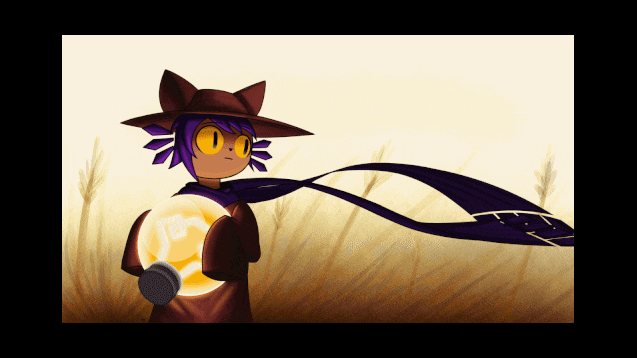

Bienvenue dans l'univers de OneShot

OneShot est un jeu d'aventure et de puzzle indépendant, développé par Future Cat LLC. Le jeu suit un jeune enfant nommé Niko, qui se réveille dans un monde étrange et mourant. L'objectif de Niko est de restaurer la lumière d'un gigantesque phare pour sauver ce monde.
Ce qui distingue OneShot, c'est son style de narration unique. Le jeu brise souvent le quatrième mur, interagissant avec le joueur de manière surprenante. Le joueur doit guider Niko à travers des énigmes et des défis, tout en tissant une relation particulière avec le personnage et l'environnement.
Avec des graphismes pixel-art charmants et une bande-son émotive, OneShot explore des thèmes de solitude, de sacrifice et d'espoir. Le jeu est réputé pour sa capacité à faire ressentir au joueur une connexion profonde avec l’histoire et ses personnages.